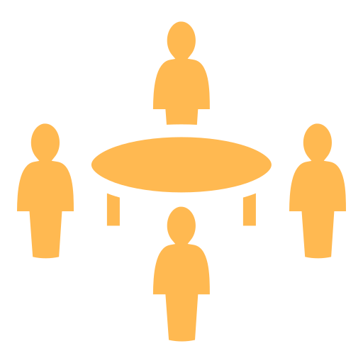

Live workshopsIn class, in groups, on Miro. 18 drills.- Goal, instructor’s example and framework
- Task with group size, time and zoom level
- Filter drills by zoom level
 Self-study projectAfter class, with your team, on your own game. 17 parts.
Self-study projectAfter class, with your team, on your own game. 17 parts.
- Exercise steps and optional blank templates
- Worked examples from the sample game, Echidna Z
- Progress you can tick off as you post
The course, day by day
Each row pairs a day’s workshop with its self-study part. The round icons open the DGMS interactive pages for that day’s topic.
How the two paths fit
Workshops follow the modules
Each drill practices the module taught that day: pillars on Days 1 and 2, audience on Day 3, player skills on Days 4 and 5, then character, controller, camera, sound, balance and game feel. From Day 3 on, most drills work on your team’s own pitch.
One game, start to finish
Part 1 is your own pillars, presented on Day 2 to form teams. Parts 2 to 17 then build the game as a design document, one section per part, ending in a master GDD and a vertical slice. Those parts are the same project used in Mastering Game Mechanics, so their linked interactives come from that course.
Exercise kinds
Workshops are tagged by what they ask of you: taking a game apart, inventing something new, playing a sample, or talking it through.